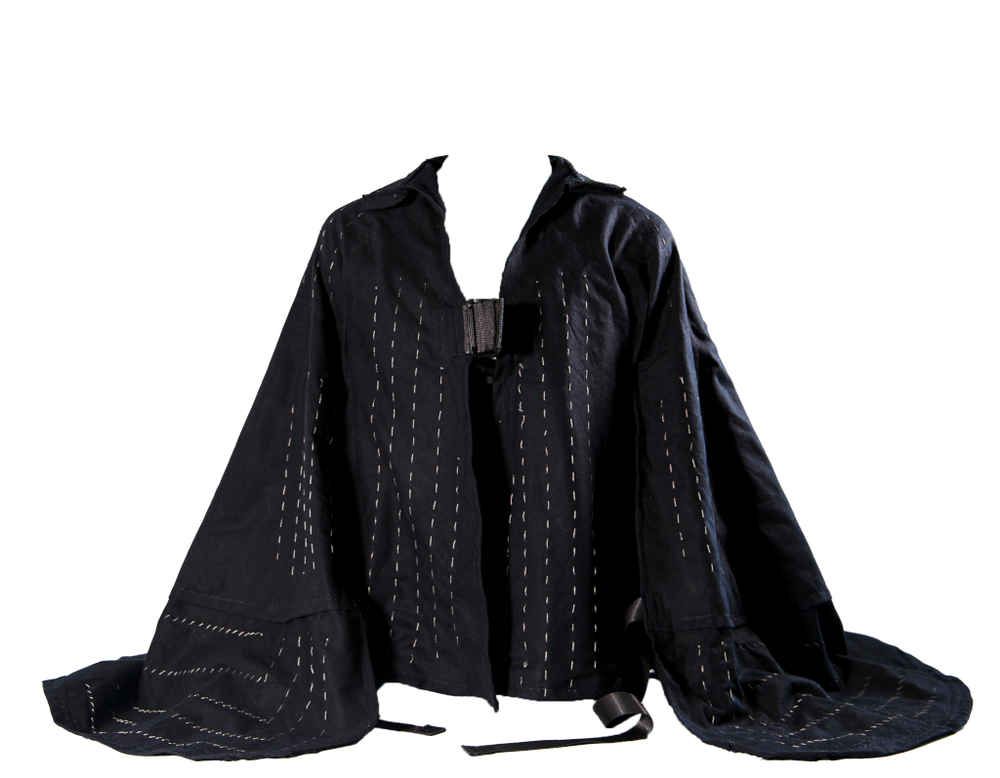
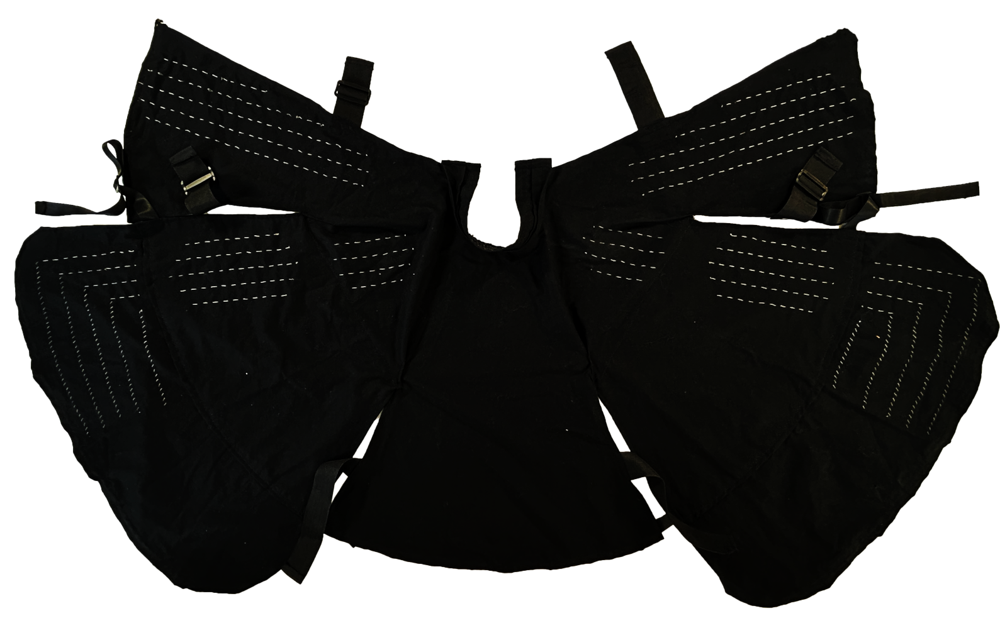
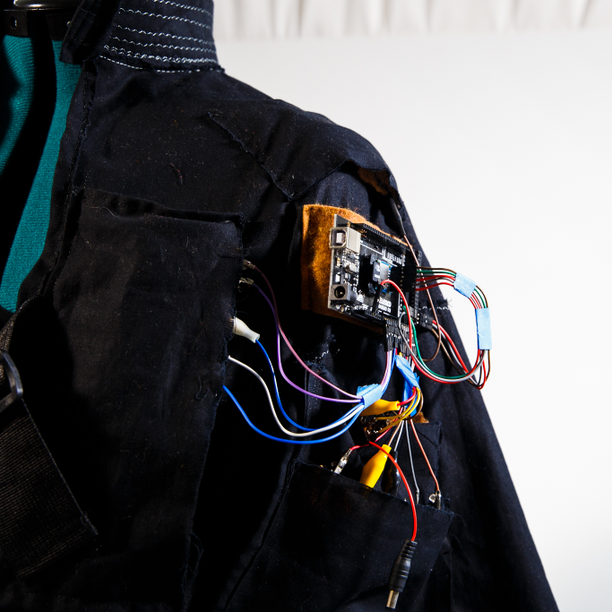
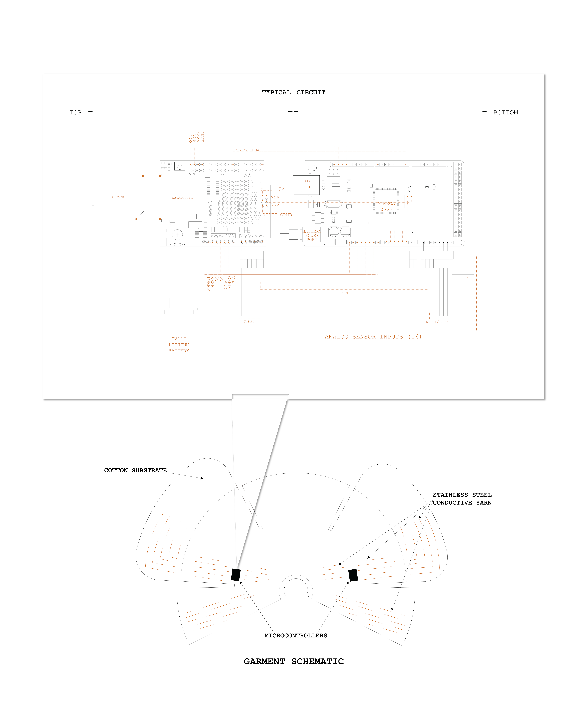
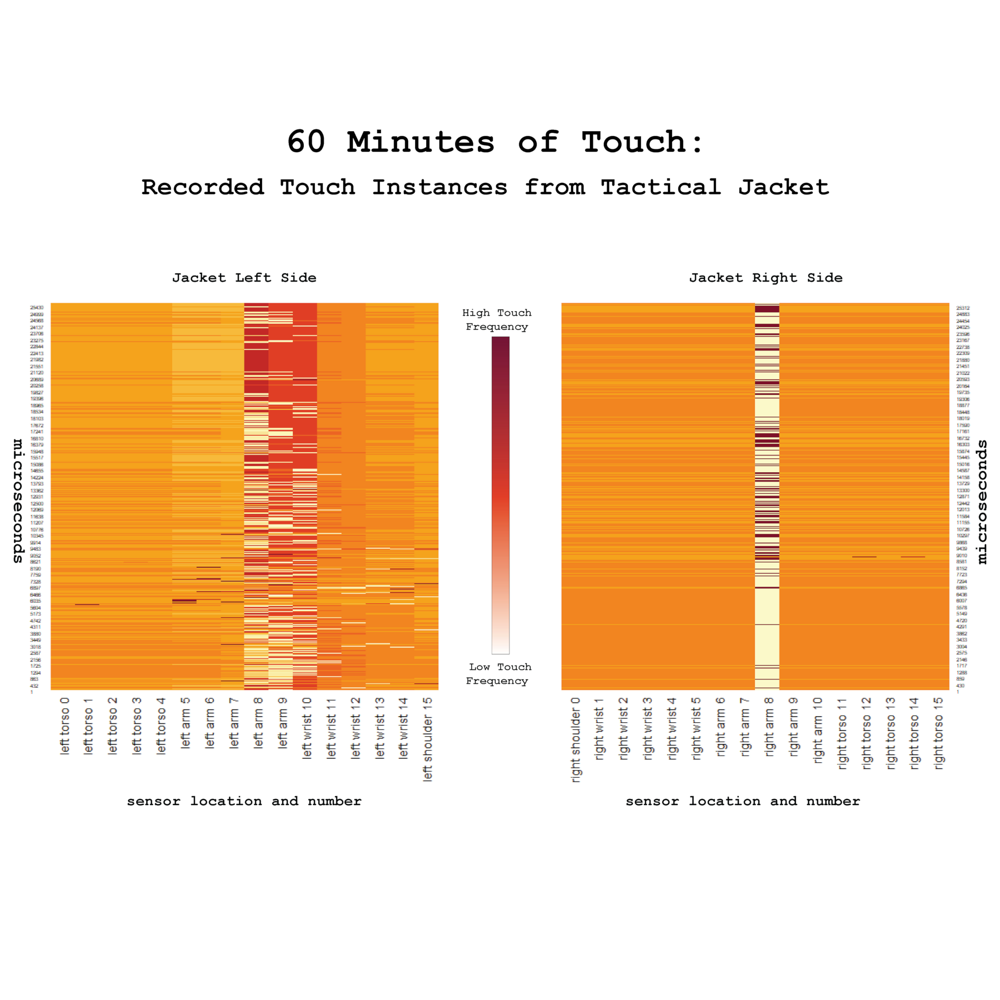
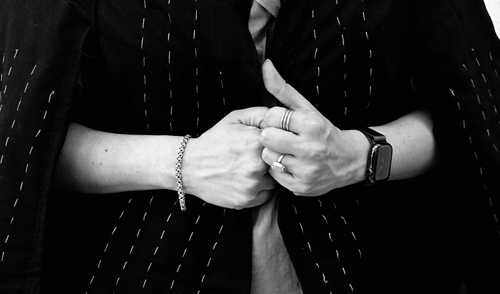

this is a computational textile conceived in the interest of capturing casual, nonsexual touch.

it's a soft system predicated upon theories that many touch interactions carry emotional messages.

this edition of the system simply observes and holds the memory of physical touch using physical computing mechanisms.
there are 16 hand embroidered conductive yarn sensor rows, 8 on each lateral side, connected to one of two microcontrollers. the system uses two ATMega 2560s equipped with micro-sd cards for data storage.


there are 4 main zones of touch: torso, upper arm, mid arm, and wrist/hand. the system checks for touch every second, logged according to sensor placement.

the system in its first incarnation makes a good listener, and has aspirations to provide harmonic feedback in future lives.

the system made its first appearance in May 2023 as déborah's master's thesis. it was also seen at ACADIA in october 2023.
you can look at its guts here